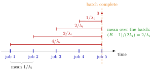

Batch Formation Time¶
Proposition¶
Jobs of family arrive with inter-arrival times of mean and are collected into batches of fixed size ; a batch is complete when its th job arrives. The time from a job's arrival until its batch is complete, averaged over the jobs, has expectation
The th job of a batch waits for the later arrivals of its batch, with expected duration ; averaging over gives the result. The batch itself needs on average from its first to its last arrival.
Interpretation¶
An arbitrary job sits somewhere in its batch: the first one waits for all others, the last one for none. On average it waits for half of the other arrivals, and each of them takes on average.

The figure takes . Job waits inter-arrival times, job waits , and so on down to job , which completes the batch and waits . The mean of is , so the mean formation time is . The arrivals are drawn evenly spaced only for readability: by linearity of expectation the result uses nothing but the mean inter-arrival time.
Two features of the formula drive the setup model. It grows linearly in , so for large batches formation dominates the sojourn time. And it uses the arrival rate of the job's own family, not the total rate , since only jobs of the same colour fill a batch; a rare family waits much longer. The time a job spends at the server has the same structure: on average jobs of its batch are served before it, which gives the term after the setup.
A common slip is to write : that would make even a batch of size wait, whereas a single job completes its own batch at once.
Key Results¶
- Mean formation time (6.2.1). for a job of family ; it is zero for and linear in (TF 6.2.1, Exercise 6.2.7).
- Whole batch. From first to last arrival a batch takes on average, twice the mean wait of an arbitrary job.
- Only means matter. The expectation depends on the inter-arrival distribution only through .
- Position in the batch. The same averaging gives the expected time at the server (6.2.5, Exercise 6.2.10).
- Trade-off. Formation time is the part of the sojourn time that rises with , against the batch queue time from Sakasegawa's formula, which falls with (server setup).
Examples¶
1. Red and blue jobs (Exercise 6.2.6). With , red jobs arriving at per hour wait on average hours for their batch, while blue jobs at per hour wait hours. Of the red job's expected sojourn time of about hours, hours is batch formation.
2. Linear growth. For red jobs the formation time is hours: hours for and hours for . Doubling slightly more than doubles it.
3. Using the total rate. Plugging the total rate per hour into the formula for red jobs gives hours instead of . Blue jobs do not help to fill a red batch.
4. A batch of two. With the first job waits one inter-arrival time and the second none, so the mean is , as gives; the wrong formula would give .
Prerequisites¶
Related Concepts¶
Sources¶
- Stochastic Operations Research · Week 6
- N. D. van Foreest, Sample Path Analysis and Simulation of Stochastic Systems, Section 6.2
Aliases: time to form a batch, batch assembly time, waiting for the batch to fill, wait-to-batch time Keywords: (B-1)/(2\lambda_i), (B-1)/\lambda_i, batch size B, family arrival rate \lambda_i, arbitrary job in a batch, setup times, red and blue jobs Symbols: lambda
Last updated: 29 October 2026 20:42
Batch Formation TimeServer SetupArrival and Departure RatesLinearity of ExpectationSetup Effective Service TimeSakasegawa's FormulaSojourn TimeBatch-Arrival QueueN-Policy